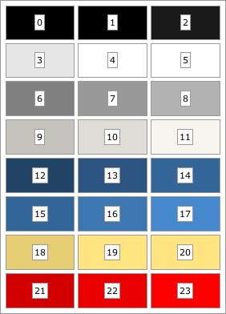

See: Description
| Interface | Description |
|---|---|
| TerraTreeViewSkin.NodeInfoVisitor |
Node info visitor interface.
|
| Enum | Description |
|---|---|
| TerraSheetSkin.SheetPlacement |
Defines skin classes for the "Terra" theme.
Terra skins get their colors from the theme's color palette, which contains 24 indexed colors. Most Terra skins expose a setter methods for each color style that accepts an integer value; such methods allow callers to style the component by referencing the theme's color palette. The default palette is shown below:

The default color palette
The font, color palette, and message icons are defined in a JSON file that should contain a Map containing the following properties:
| Property: | Type: | Description: |
|---|---|---|
| font | String | The default theme font; must be understandable by java.awt.Font.decode(). |
| colorMultiplier | Number | The default multiplication delta (+/-) for generating the darker and lighter version of any "base color palette", in the range [0.0..1.0]. |
| colors | List<String> | This list should contain eight colors in a form understandable by java.awt.Color.decode(). This list represents the theme's "base color palette", from which the full color palette is derived. Each of these eight colors will be expanded to three colors in the final palette: a darker version, the color itself, and a lighter version. Thus, the final color palette will contain 24 colors. For instance, in the default color palette, the "base palette" colors are the colors in the middle column. |
| messageIcons | Map | Message icon names; must include values for "error", "warning", "question", and "info". Names are specified as resource named relative to the TerraTheme class. |
| smallMessageIcons | Map | Small message icon names; must include values for "error", "warning", "question", and "info". Names are specified as resource named relative to the TerraTheme class. |
By default, the theme definition in TerraTheme_default.json is used, but can be overridden via the org.apache.pivot.wtk.skin.terra.location property.